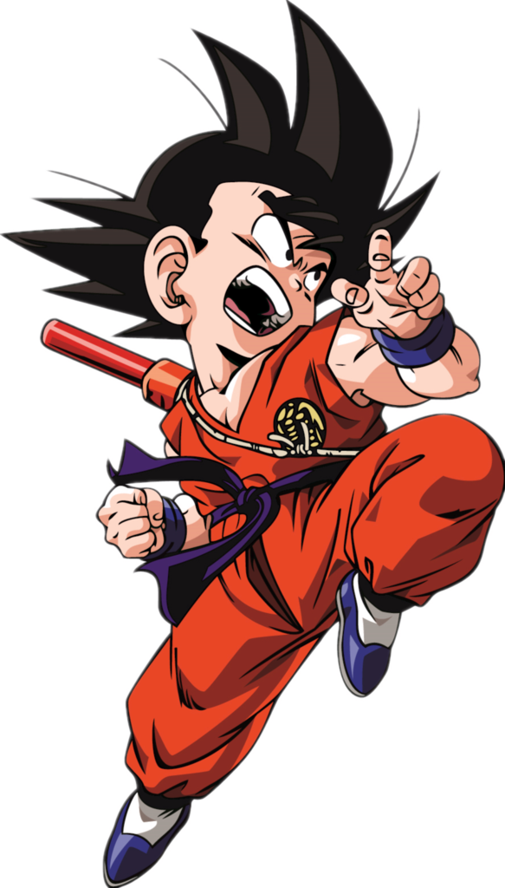
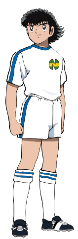
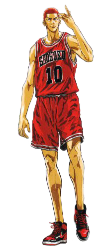

| Goku |
| Oliver |
| Sakuragi |
| Shinji Ikari |
|  | >Son Goku (孫そん悟ご空くう, Son Gokū, Sūn Wùkōng), conocido como Gokú en Hispanoamérica, es el protagonista principal del manga y anime de Dragon Ball creado por Akira Toriyama. Su nombre real y de nacimiento es Kakarot (カカロット, Kakarotto, «Kacarrot» en saiyano.png en alfabeto saiyano) y es uno de los pocos saiyanos que lograron sobrevivir a la destrucción total del Planeta Vegeta del Universo 7. Es el segundo hijo de Bardock y Gine, hermano menor de Raditz, nieto adoptivo de Son Gohan, esposo de Chi-Chi, padre de Son Gohan y Son Goten, a su vez también es el abuelo de Pan y ancestro de Son Goku Jr. |
|  | >Oliver Atom u Oliver Atton, originalmente transcrito como Oliver Hutton en la versión italiana en que se basaron otros tantos doblajes (大空 翼 Ōzora Tsubasa en la versión original japonesa), es el protagonista principal de la serie de anime/manga japonesa creada por Yoichi Takahashi llamada Capitán Tsubasa (Los Supercampeones en Latinoamérica) y sus consiguientes series secuelas (Captain Tsubasa J, Campeones hacia el Mundial), Oliver es un chico entusiasta y gran apasionante del fútbol. Para él, el balón es su amigo y cree que todos deberían considerar así al esférico. |
|  | >Hanamichi Sakuragi (花道・桜木, Hanamichi Sakuragi) es el personaje principal de la serie japonesa de manga y anime Slam Dunk, creada por el mangaka japonés Takehiko Inoue. Es alto, pelirrojo teñido, al principio tenía el pelo largo, pero después se rapó (como auto-castigo al sentirse culpable de perder un partido - específicamente el partido clasificatorio ante Kainan), tiene los musculos notablemente desarrollados y tiene una mirada un poco seria. |
| >
Shinji Ikari (碇シンジ, Ikari Shinji ?) es el Third Children, el protagonista principal de la serie y piloto designado del Evangelion Unidad 01. Shinji es hijo de la bioingeniera Yui Ikari y del jefe de la organización NERV, Gendo Ikari. Después de la muerte de su madre, fue abandonado por su padre y vivió durante 11 años con su sensei, hasta que fue llamado a Tokio-3 para pilotar la Unidad-01 y enfrentar a los ángeles. Vive inicialmente con Misato Katsuragi, aunque más tarde se une a ellos Asuka Langley Sohryu. |